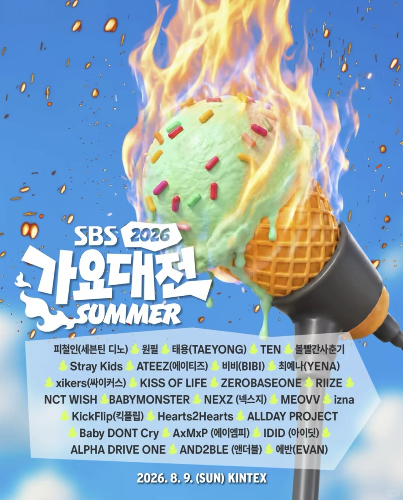

活动介绍
SBS 歌谣大战是韩国年末/季节性大型音乐节目拼盘。Summer 场更像一次高密度 K-Pop 快闪总览：头部团、热门新团、solo 与乐队同台出现，适合用一天快速建立“今年谁最热”的体感。
2026.08.09 · SUN · KINTEX
给第一次看韩流拼盘的人：先看清阵容，再用最短路径认识每组艺人、代表曲和今年舞台看点。

Event Brief
SBS 歌谣大战是韩国年末/季节性大型音乐节目拼盘。Summer 场更像一次高密度 K-Pop 快闪总览：头部团、热门新团、solo 与乐队同台出现，适合用一天快速建立“今年谁最热”的体感。
KINTEX，韩国京畿道高阳市的大型展演场馆。常见路线是从首尔市区搭地铁到大化站 Daehwa，再转步行/接驳；当天建议预留入场、取票、安检和散场排队时间。
本页按个人/男团/女团拆分，并按海报前后顺序与大众认知热度综合排序。新团多，说明今年 SBS Summer 的重点不只是顶流，也在展示 5 代、6 代候选面孔。
如果不了解 K-Pop，先看每组资料页里的“入门一句话”和“推荐观看”，再按舞台风格挑想重点看的表演。
Lineup Tabs
History Check
2026 Summer 的结构很“新世代”：Stray Kids、ATEEZ、TAEYONG 负责大盘号召力， ZEROBASEONE、RIIZE、NCT WISH、BABYMONSTER、KISS OF LIFE 负责近期热度， Hearts2Hearts、ALLDAY PROJECT、IDID、ALPHA DRIVE ONE 等则承担“提前看明年会不会爆”的发现感。
Winter Guess
Sources